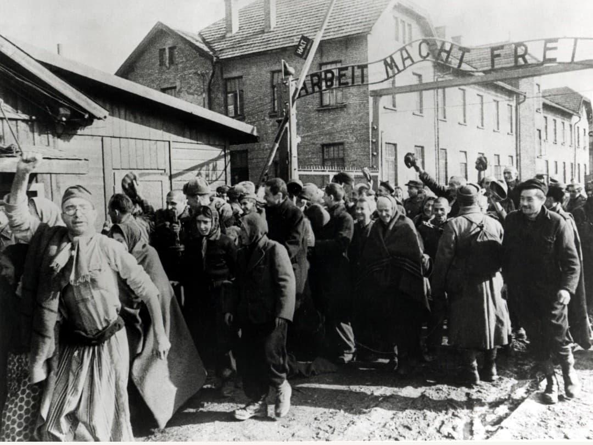
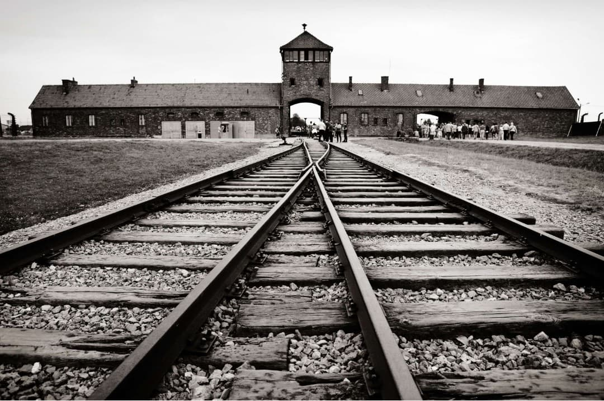
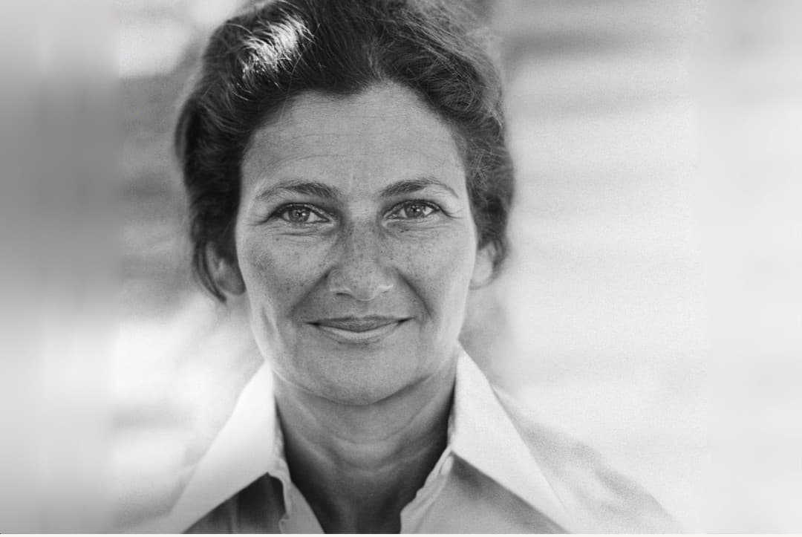
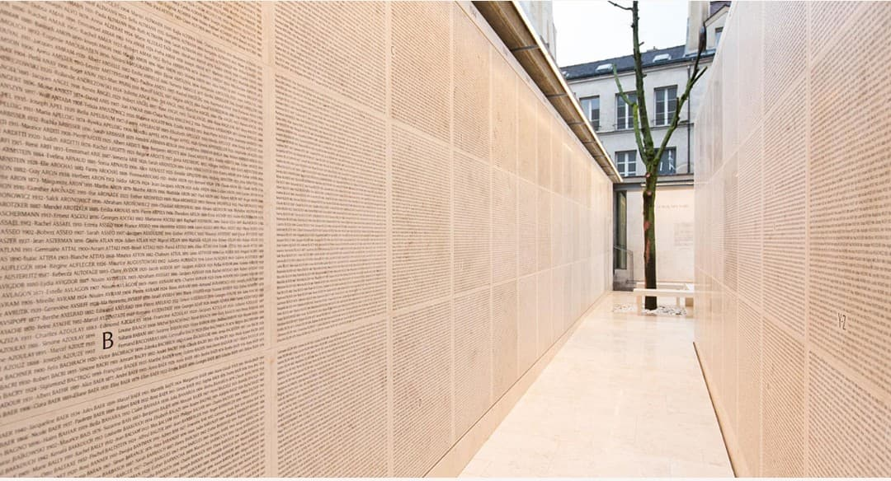
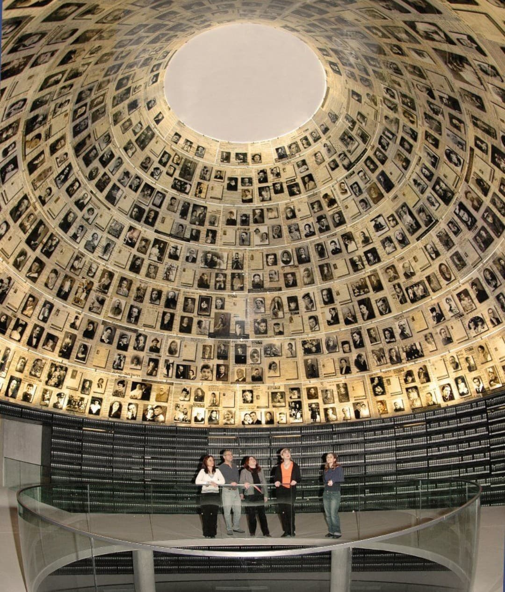
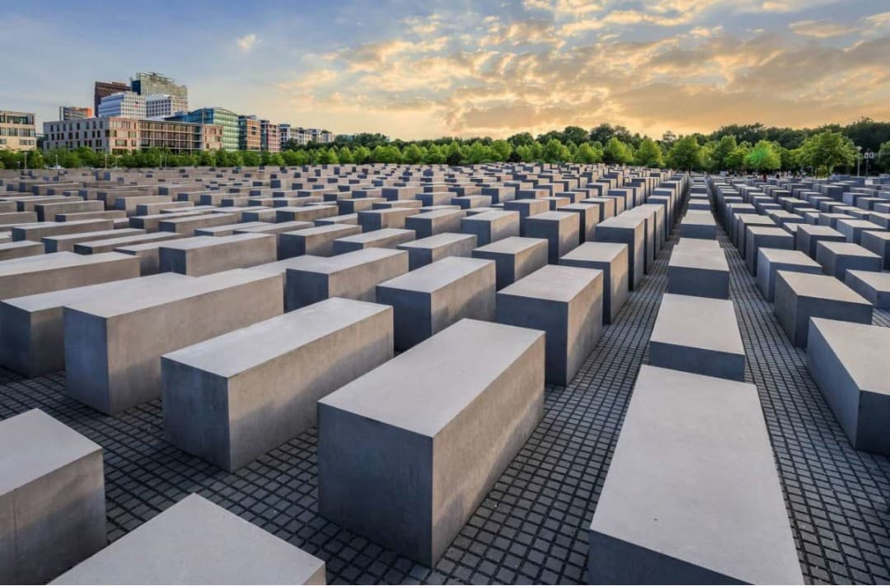
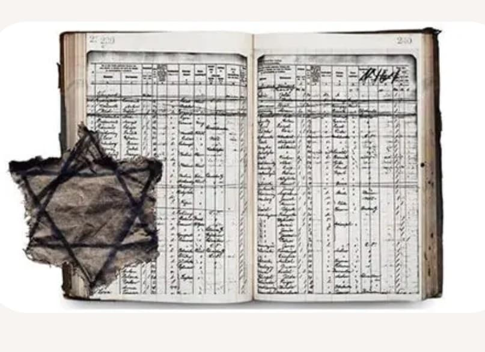
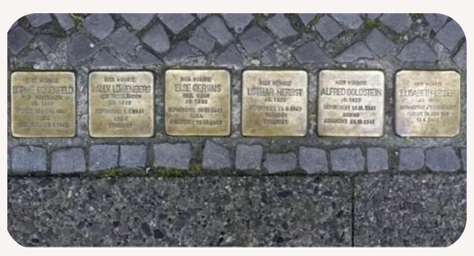

La mémoire de la Shoah est un pilier essentiel de l’histoire contemporaine. Elle permet de comprendre l’ampleur du génocide perpétré par le régime nazi, d’honorer les victimes et de transmettre aux générations futures les mécanismes qui ont conduit à l’extermination de six millions de Juifs.
Préserver cette mémoire, c’est lutter contre l’oubli, le négationnisme et toutes les formes de haine qui ont rendu possible l’un des crimes les plus graves de l’humanité.
À la libération des camps en 1945, le monde découvre l’horreur du système concentrationnaire nazi. Les images filmées par les Alliés, les témoignages des survivants et les documents retrouvés dans les camps révèlent l’ampleur du génocide.

La libération d’Auschwitz en janvier 1945 marque la fin d’un enfer. Les survivants sortent du camp, affaiblis mais libres. Ces images sont devenues des symboles de la fin du génocide.

L’entrée d’Auschwitz-Birkenau, avec ses rails menant au camp, est aujourd’hui un lieu de mémoire incontournable. Des millions de visiteurs s’y rendent chaque année pour comprendre et se recueillir.
Les procès de Nuremberg (1945–1946) établissent juridiquement la responsabilité des dirigeants nazis. Le terme « crime contre l’humanité » entre dans l’histoire. D’autres procès suivront, visant les gardiens, médecins et responsables de ghettos.
Les survivants jouent un rôle central dans la mémoire de la Shoah. Leurs récits permettent de comprendre l’expérience des camps, la déshumanisation et la survie.

Simone Veil, déportée à Auschwitz, est devenue l’une des voix les plus importantes de la mémoire. Son témoignage et son engagement ont marqué la France et l’Europe.
Plusieurs lieux dans le monde sont dédiés à la mémoire de la Shoah : musées, monuments, stèles, centres d’archives. Ils permettent de transmettre l’histoire et d’honorer les victimes.

Le Mémorial de la Shoah à Paris conserve des milliers de noms gravés sur ses murs. Il est un lieu de recueillement et de transmission.

Le Hall des Noms de Yad Vashem rassemble les portraits et les témoignages des victimes. Chaque personne y est honorée individuellement.

Les stèles du mémorial de Berlin forment un paysage silencieux et introspectif. Ce lieu invite à la réflexion sur l’ampleur du génocide.
Les archives sont essentielles pour comprendre la Shoah : listes, lettres, documents administratifs, photos d’identité. Elles permettent de reconstituer les parcours individuels.

Les documents retrouvés après-guerre sont des preuves irréfutables du génocide. Ils servent à la recherche historique et à la lutte contre le négationnisme.
Les Stolpersteine sont des plaques de laiton posées devant les anciens domiciles des victimes. Elles rappellent leur nom, leur vie et leur déportation.

Ces plaques, présentes dans toute l’Europe, sont un hommage discret mais puissant. Elles rendent la mémoire visible dans l’espace public.
Préserver la mémoire de la Shoah permet de prévenir les génocides futurs, de comprendre les mécanismes de haine et de propagande, et de défendre les valeurs humaines fondamentales.
Page du Musée HOP WW2 – Mémoire de la Shoah